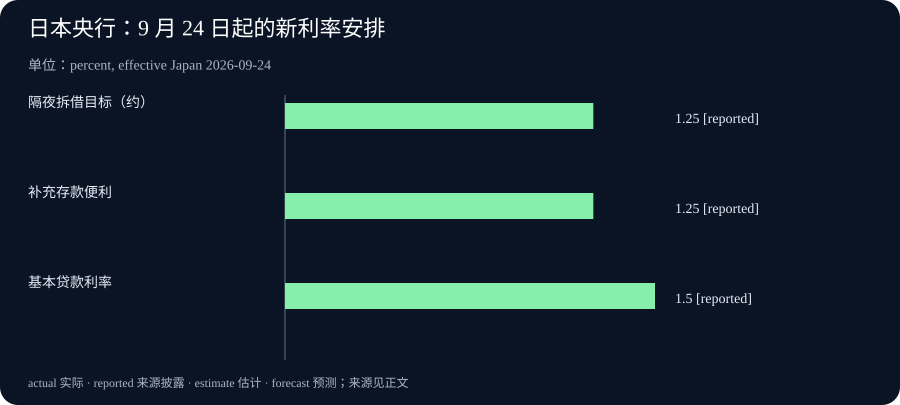

Daily Intelligence
2026-09-21 · Monday · 上海时间早间版。核心新闻采用 9 月 18 日已公开的一手材料；技术背景页仅标注九月，不伪造具体发布日期。本期不把周末之后的刊期当成新闻发生日，也不提供未经核验的实时行情。
Today’s Thesis｜把探索放在前面，把不可逆的承诺放在后面
今天值得关注的，不是又多了多少 AI 工具，而是试错发生在什么位置。基础研究需要容纳暂时落后的新路线；商业应用需要在打样、采购与现场执行之前筛选方案；经营预算则要对已经公布的资金成本变化保持敏感。本刊判断：真正有价值的加速，是更早获得有用反馈，同时保留修改决定的空间。
Executive Summary｜研究选择、生产选择与资金条件
1. Sakana AI 于 9 月 18 日公开介绍 Frontier Intelligence Group，强调长期探索不同智能范式；这是研究组织与方向的说明，不是通用智能已经实现的公告。官方介绍 2. 其关联技术材料展示了局部学习方法的有限实验结果，网络层数不能直接换算成大模型能力或商业效率。研究说明 3. Google 披露与两位时装设计师共创工具的案例，应用重点在实体制作之前的搭配和秀场规划；未披露可复核的净节省金额。企业案例 4. 日本央行已公布新的利率安排，但实施日尚未到来。本期图表展示已公布参数，不冒充今天的成交利率。政策文件
阅读顺序建议：先看新闻证据，再看商业机制，最后把行动落到一项真实决定。研究自由、产品效率和融资环境分别回答不同问题，不应被压缩成同一个“AI 利好”标签。
AI Daily｜一千层不是一个可以脱离任务阅读的数字
Sakana 的 FIG 是此前已在内部发展的研究群体。公司希望保护长周期、允许失败的探索，并关注数据与能源效率；这表达的是其研究立场，不能证明现有主流路线已经失效。介绍页还列举多项已有工作，不代表这些成果都在 9 月 18 日首次发布。FIG 原文
与之关联的 PC-ALM 页面说明：作者在 MNIST 手写数字任务上，以带残差连接的多层感知机训练五轮，展示了最高一千层的局部学习实验；报告表现接近反向传播基线。作者主要研究深而窄的网络，能效应用则被表述为对未来神经形态硬件的潜在启发。页面只标注 2026 年 9 月。实验范围与讨论
本刊技术分析：这里最容易被误读的是“规模”。网络深度、参数量、数据复杂度和训练计算量不是同一个指标。让一种学习方法在深层结构里保持有效信号，具有研究意义，但不能据此说它已在通用语言任务上取代现有训练方法，更不能写成已经降低了商业模型的总训练成本。
局部通信的吸引力，是系统中的一部分可能不必等待一个统一的全局处理阶段；然而，局部更新也可能需要反复迭代才能达到可用状态。判断实际效率，需要把迭代次数、运行硬件、精度要求和收敛条件放到同一张比较表里。只看某一个机制更简洁，不能知道整个系统是否更快。
对技术团队而言，合适的下一步不是立即更换生产架构，而是建立一个可复现的小实验：固定任务、固定预算、保留成熟基线，记录何时有效、何时失效。若新方法只在某些结构上有优势，这依然可能是一项有价值的发现；把局部优势如实保存，比把它包装成万能路线更有利于后续研究。
对非技术读者，一个简单问题足以过滤不少夸张标题：这个数字是在什么任务、什么结构、什么资源下得到的？如果这些限定条件不见了，先回到原文，不急于用它判断一家公司或一种路线的长期胜负。
Business Daily｜让设计师在做成实物之前发现不合适
Google 于 9 月 18 日介绍与 Jane Wade、Sergio Hudson 共创的两项 Flow 工具。Styling Suite 用数字模特辅助服装、发型、妆容及配饰搭配；Runway Visualization 用来调整秀场布置、灯光、道具及模特路线。文章称合作成果已在纽约时装周呈现，但没有提供对照实验或净收益数据。Google 案例原文
本刊商业分析：这一类应用不一定要替代设计师才能产生价值。它可能把“发现不协调”的时点从已经裁剪、缝制或布置之后，移到仍可修改的方案阶段。对于资源有限的团队，少做一轮无效返工，可能比多生成大量候选图片更重要；但这只是机制判断，不能当成本次案例已经测得的收益。
虚拟方案与实际交付之间仍有一道门槛。图像里成立的衣料垂坠、尺寸比例或照明效果，到了现场未必成立。负责实物制作的人需要验证材料、结构和安全限制；视觉工具不能凭一张好看的图，就替他们确认库存、预算或施工可行性。
因此，商业验收应围绕一次真实决策来做。团队可以记录从初始方案到批准方案的总时间、现场改动和最终返工，而不是仅统计生成次数。还应把上传材料、整理提示、筛选结果及人工复核算进成本，避免把一段更快的操作误记为整个项目都更便宜。
采购时也要问清工具与现有流程如何衔接。设计文件能否导出，最终确认由谁完成，客户图像与未发布系列是否允许上传，供应商退出后是否还能继续工作，这些问题直接影响使用成本。一个小范围试点可以先验证这些连接处，再决定是否扩大；没有必要为了证明采用了 AI 而强行覆盖所有环节。
Macro Observation｜已经公布，不等于已经生效
日本央行 9 月 18 日以七比二通过新安排：无担保隔夜拆借利率目标为约 1.25%，补充存款便利利率为 1.25%，基本贷款利率为 1.50%；新安排从 9 月 24 日生效。文件脚注明确写出了实施日期。公告正文及脚注
这些是不同工具的政策参数，不是三种可由普通客户直接获得的存贷款报价。尤其不能把未来实施的目标写成 9 月 21 日已实现的市场成交值。本期也没有根据这份公告推导即时汇率、债券价格或个人投资回报。
本刊宏观分析：政策公布和执行之间的时间差，对经营计划有实际意义。企业不必等到账单变化才查看合同，但也不能不看条款就把政策调整等比例套用到所有债务。浮动利率的重定价日、固定利率的到期时间和不同币种的资金安排，会让实际影响分散到不同阶段。
一个有用的预算检查，是区分现有合同、即将续签的合同和仍未承诺的项目。前两者需要根据实际条款估算；第三类则仍保留调整规模、顺序或时间的空间。这里提供的是分析框架，不是关于某一家企业融资成本的测算，更不是买卖资产建议。
把这一点放回 AI 投资：技术试验本身可能便宜，但围绕它作出的长期承诺未必便宜。采购设备、招聘专岗和签订多年服务合同，应分别检查持续价值与退出条件。不能因为演示很快做出来，就假定后续投入也都可轻易撤回。
核验范围：本期已读取央行原始 PDF 的正文和脚注；当前截图接口未返回可检查的图像，因此不声称完成 PDF 视觉核验。
Signal Dashboard｜用不同证据判断不同成熟度
| 观察对象 | 已有证据 | 不应推导 | 后续验证方向 |
|---|---|---|---|
| 长期智能研究 | FIG 的组织与研究方向说明 | 主流架构已被替代 | 可复现成果与方法边界 |
| 局部学习 | 限定任务和结构上的实验 | 商业大模型已全面降本 | 同任务、同预算比较 |
| 时装工作流 | 企业披露的具体应用案例 | 普遍适用的收益比例 | 全流程耗时与实际返工 |
| 日本资金条件 | 已公布的政策参数与实施日 | 所有客户借款利率同步变化 | 生效安排及合同重定价 |
各行对应前文一手来源。这里的空白不是零收益或零风险，而是尚未取得的证据。尤其要保留实验、案例、政策这三类材料之间的区别，不能用一种材料的可信度替另一种材料背书。
Deep Insight｜便宜的探索与昂贵的承诺，应当采用不同的节奏
以下为本刊机制分析。一个项目可能同时包含两种成本：寻找合适方案的成本，以及选定方案后退出的成本。AI 可以降低其中某一段，却不一定同时降低另一段。生成一个候选方案变得容易，不意味着为它采购、培训、维护和承担后果也同样容易。
这解释了为什么“试得更快”有时没有变成“做得更好”。当候选数量增加，但负责筛选的人没有更多时间、也没有清楚标准时，团队只是把瓶颈从制作转移到了判断。若再用生成数量评价进度，就可能奖励大量尚未被认真比较的选项，而真正需要回答的业务问题仍然悬而未决。
一个更稳妥的顺序，是先说明当前最重要的不确定性。它可能是用户是否需要这项功能，也可能是图像能否忠实表达材料，还可能是某种算法在预算限制下能否稳定运行。不同问题需要不同试验；不应因为已有一个方便的工具，就把所有问题都改写成这个工具擅长输出的形式。
随后设计尽可能小、但足以改变决定的试验。若目的是判断某种搭配是否合适，先做可比较的候选并让负责人选择；若目的是判断生产是否可行，就需要实物验证。不能用前者的成功替代后者，因为它们消除的是不同的不确定性。类似地，研究原型证明了一种机制可行，也不能跳过工程约束直接进入采购承诺。
对探索性研究，过早要求短期业务回报，可能让团队只做成熟路线的细微改良。允许不确定的方向存在，是保留未来选择的一种方式。但允许失败不等于不记录：问题、方法、资源消耗和学到的限制仍值得保存。一次没有达到目标的实验，如果清楚排除了某条路径，也可能帮助下一次分配资源。
对已经进入生产的项目，则应采用另一种纪律。此时他人已经依赖输出，失败可能影响客户、同事或实物交付。更重要的是稳定边界、异常处理和责任归属。研究阶段可以容许频繁改变方向，交付阶段却需要控制变化；把二者混在一起，要么压制探索，要么让用户替试验承担未经同意的风险。
预算也应跟随这个阶段差异。少量试验经费购买的是信息，长期合同购买的是持续能力；审批时需要的证据强度不应完全相同。如果项目仍未证明关键假设，就先保留停止或缩小的空间。若已经证实持续价值，再讨论扩展所需的人力、维护和资金，而不是让一次演示直接触发多年承诺。
还需要警惕对“便宜”的狭窄定义。工具费用只是可见的一部分，学习、复核、数据整理和退出迁移都可能消耗资源。没有必要一开始就精确到每一分钟，但至少应列出这些类别，知道哪些已测量、哪些仍是估计。未知成本不该被默认为零，正如潜在价值也不该被默认为已经兑现。
本期三类新闻提供的是不同观察窗口，不是一个必然成立的因果链。它们共同帮助我们提出一个管理问题：当前这一步是在获取信息，还是在增加难以撤销的承诺？对前者，可以鼓励有边界的试验；对后者，要把依据、负责人和退出条件说清楚。把这两个节奏区分开，比一味追求更快或一味要求更谨慎更有用。
Tomorrow Watch｜看后续证据，不预写明天的结论
- 技术端：继续观察研究代码、复现实验和任务扩展；本期没有确认相关团队在 9 月 22 日一定发布新结果，不把观察清单写成已排定发布会。
- 商业端：寻找采用者对实际返工、总时间及限制的披露。厂商案例之外的使用证据，有助于判断适用范围，但不能预设一定会出现正面结果。
- 宏观端：央行文件列明新安排在 9 月 24 日实施，本次会议的意见摘要计划于 10 月 1 日日本时间 08:50 发布。它们均不是明天事项；在材料真正发布前，不提前编写会议解释。文件末页日程
工作日信息恢复更新后，优先看会改变现有判断的新增证据。没有新材料时保持原来的不确定状态，比用重复标题制造“每天都有突破”的感觉更诚实。
One Chart｜日本央行已公布、9 月 24 日起适用的三项参数

| 政策工具 | 已公布水平 | 状态 |
|---|---|---|
| 隔夜拆借目标 | 约 1.25% | 9 月 24 日起的新指引 |
| 补充存款便利 | 1.25% | 9 月 24 日起适用 |
| 基本贷款利率 | 1.50% | 9 月 24 日起适用 |
图中 reported 表示官方已公布，不表示本期日期已实际实施；第一项是约数目标，后两项是相应工具的设定利率。这是同一公告中的横向比较，不是时间序列，也不是普通客户的贷款报价。图表来源：公告第一页
Quote of the Day｜把注意力留给会改变判断的部分
“the art of being wise is the art of knowing what to overlook.”
— William James
中文：智慧的艺术，在于知道哪些可以略过。
出处：《The Principles of Psychology》第二卷，第二十二章 Reasoning，第 369 页；此处节录原句的后半分句，保留原文小写开头。原文
本刊解读：略过不意味着忽视反对证据，而是先辨认什么与眼前的问题有关。把一个数字放回任务和时间范围，往往比再收集十个相似标题更有助于行动。
Action Items｜让本周的一项试验真正帮助决策
- 选一个仍可修改的工作环节，写下当前最重要的不确定性；设计一次小试验，并提前说明什么结果会改变决定。
- 对一份 AI 工具评估，同时记录制作、筛选、复核和返工，不以生成数量代替最终交付质量；仅使用获授权的资料。
- 将拟投入项目分为短期探索与长期承诺，后者单独核对持续成本、责任人及退出条件。若涉及资金安排，依据真实合同，不直接套用政策利率。